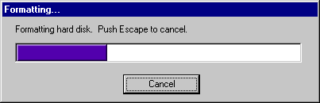

Hey there, I'm João Carvalho, a Full Stack Developer from sunny
Portugal. I approach programming as an art form, just like a
persistent early bird with a passion for creating something unique and
beautiful from scratch. With the determination of a certain
adamantium-clawed mutant and the adaptability of a pink puff ball from
the stars, I have acquired many coding skills like something out of a
question block, ranging from basic web languages like HTML and CSS to
more advanced frameworks such as React, Ionic, and Node. I have also
worked with databases like CouchDB and Redis. I might not carry a whip
or holy water, but my leadership skills are well-honed, having managed
development teams using agile methodologies like Scrum and Kanban. So
let's create something amazing together!
STRENGTHS && WEAKNESSES
Tech Skills
- Markdown
- HTML
- CSS
- JavaScript
- TypeScript
- React
- Redux
- Ionic
- Electron
- Node.js
- Hapi
- Express
- Jest
- Discord.js
- CouchDB
- MongoDB
- Redis
- Git
Industry Skills
- Team Leadership
- Scrum
- Kanban
Languages
- Portuguese
- English
- Spanish (Basic)
Other Skills
- Gaming
- Cooking
- Ancient Meme History
- Static Electricity Storage
- Acoustic Localization
Weaknesses
EXPERIENCE
Full Stack Developer | Team Leader | Project Manager
May 2023 - June 2024
Remote
An iOS mobile app centered on fine arts, featuring a shop-in-shop concept that enables galleries to
create video
content to showcase artists.
Responsibilities:
• Worked in a team of 6 developers.
• Developed and implemented new features.
• Built the API using TypeScript, Express and Node.js.
• Wrote and maintained tests using Jest.
• Created a Back Office with React and Ionic.
• Migrated infrastructure from AWS to Digital Ocean and implemented Docker.
• Authored all documentation using Astro Starlight.
• Took on leadership roles as team leader, tech leader, git master, Kanban sensei, and project
manager.
• Reduced the time required to implement new features by 75%.
Tech Stack:
• Front End: React, React Native, Ionic, Expo, Astro Starlight
• Back End: TypeScript, Express, Joi, Node.js, Jest
• Database: MongoDB, Redis
• Infrastructure: Digital Ocean, Docker, GitLab Runner
Ottimo
Full Stack Developer
April 2023 - September 2023
Remote
A computer parts and appliances store with both business-to-client and business-to-business
operations.
Responsibilities:
• Designed and built a comprehensive management back office with TypeScript, React and Ionic.
• Built the API using TypeScript, Hapi and Joi.
• Created a mechanism to consume third party parts catalogs using Node.js and TypeScript.
• Set up and managed the CouchDB database.
• Worked independently on the full stack project.
Tech Stack:
• Front End: TypeScript, React, Redux, Ionic
• Back End: TypeScript, Hapi, Joi, Node.js
• Database: CouchDB
Chipman
Full Stack Developer
May 2022 - May 2023
Lisbon, Portugal
Code for All_ n01r platform
Responsibilities:
• Collaborated in a team of 10 developers.
• Bug fixed and added features to the back office built with JavaScript, React and Redux.
• Wrote tests both in back end and front end using Jest, Cypress and Storybook.
• Bug fixed and added features to the n01r platform.
• Enhanced the code challenge system in n01r, by improving the accuracy of the auto-check system,
reducing
false
negatives and false positives by 30%, using JavaScript and Node.js.
Tech Stack:
• Front End: JavaScript, React, Redux, Cypress, Storybook
• Back End: JavaScript, Hapi, Joi, Node.js, Jest
• Database: PostgreSQL, SQLite
Bool
Full Stack Developer | Team Leader
August 2019 - March 2022
Lisbon, Portugal
A platform for automobile insurance expertise with in-built video conference.
Responsibilities:
• Collaborated in a team of 8 people.
• Developed a Markdown reader and editor for documentation using JavaScript and Electron.js.
• Maintained and debugged a desktop app, reducing customer complaints by 87.5%, using JavaScript,
Electron.js
and AngularJS.
• Migrated API from JavaScript to TypeScript with Node.js.
• Migrated a Java mobile app to TypeScript, Angular and Ionic.
• Transitioned back office from JavaScript and AngularJS to TypeScript and Angular.
• Implemented a robust authentication and role-based access control system.
• Maintained and optimized CouchDB integration.
• Integrated with various third-party APIs and web services.
• Led the team as team leader and git master.
• Served as the primary technical contact for third-party representatives.
Tech Stack:
• Front End: TypeScript, Angular 8, Ionic, Electron.js
• Back End: TypeScript, JavaScript, Hapi.js, Node.js
• Database: CouchDB, Redis
• Infrastructure: GitLab Runner, Google Cloud Platform
ITC
EDUCATION
Full Stack Programming Bootcamp
January 2019 - April 2019
A 14 week intensive and immersive full stack programming bootcamp with
emphasis on Java and JavaScript. Used technologies like intelliJ, Git
and Unix; frameworks like Spring, Hibernate and Bootstrap and
methodologies like Scrum and Kanban. Learned a lot of new things about
team work, presentations, motivation and above all had a lot of fun
doing it!
<Code for All_>

PROJECTS
Oak API
January 2023 - Present
Oak API, as the name implies, is my own personal server to be used for
all my apps. It connects to my database and other APIs that make sense
for my needs, including Artemis.
Stack: TypeScript, Node, Hapi, CouchDB, Redis
See project
Artemis
January 2022 - Present
Artemis is my personal bot. So far used for Discord but potentially
can be used for more in the future.
Its speech module allows artemis to automatically respond of react to
certain key words and also reply if mentioned. Besides an 8-ball style
functionality where it may answer a question with a vague answer.
There is also Tales of Murwelgrave, an RPG style text based game where
players can interact with monsters and start an RNG focused battle.
Stack: TypeScript, Discord.js
See project
Hyrule Warriors Definitive App
September 2020 - June 2021
I love the Legend of Zelda series. But Hyrule Warriors is a very
distinct entry in the franchise, with a lot of things to do and
unlock. Being dissatisfied with the available guides, I decided to
take matters into my own hands and make my own guide app.
Stack: TypeScript, Angular, Ionic
See project
Profile Page
August 2019 - November 2020
Having a physical CV is cool and all, but why not make my own online
interactive CV? And you're experiencing it right now! I avoided using
any scripts or styling frameworks.
Stack: HTML, CSS
See project